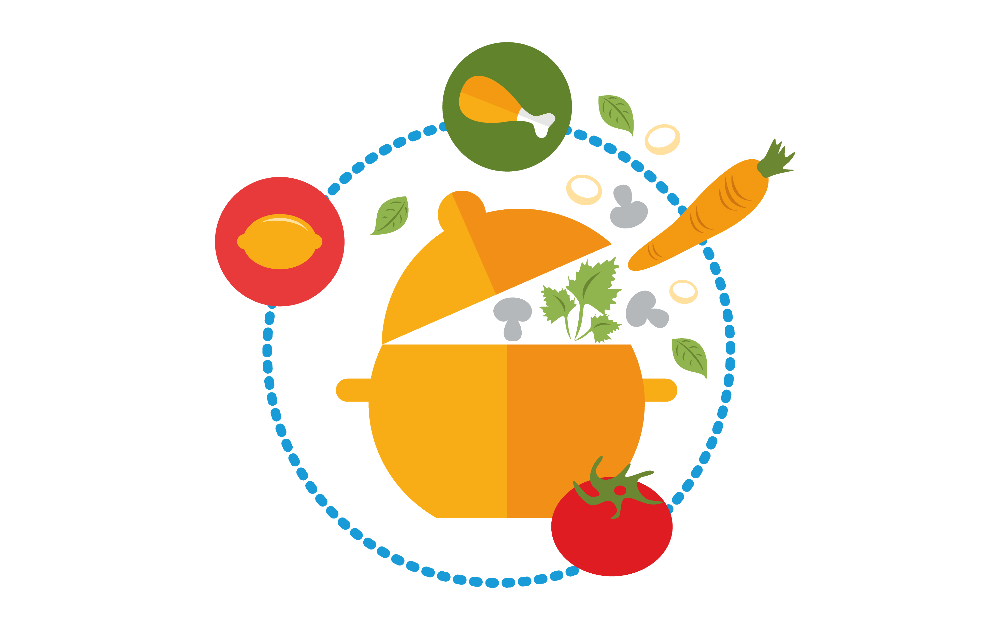

Los hábitos alimentarios se pueden describir como patrones rutinarios de consumo alimentario. Son tendencias para elegir y consumir unos determinados alimentos y a excluir otros. Comprende un conjunto de habilidades que desempeñan el papel de mecanismos de decisión los cuales organizan y orientan la conducta ordinaria y por consiguiente nuestro comportamiento alimentario: lo que comemos y el modo como lo comemos, es decir, el consumo cotidiano de alimentos.
Lo primero que debes saber es que una alimentación saludable nos ayuda a cubrir las necesidades nutricionales que requerimos para que nuestro cuerpo funcione correctamente. Por ejemplo: El desayuno es muy importante porque es nuestro primer alimento después de muchas horas, nos ayuda a que tengamos energía durante el día y mejor rendimiento, previene enfermedades como el sobrepeso y la obesidad; además ayuda a la concentración y atención para actividades escolares o laborales y contribuye al crecimiento y desarrollo de niñas y niños.
- Consume Frutas y Vegetales. En nuestra dieta debemos incluir al menos 5 porciones de frutas y vegetales. Son alimentos ricos en fibra, vitaminas y antioxidantes. Recuerda consultar con un especialista las cantidades y variedades recomendadas.
- Distribuye adecuadamente las comidas diarias. El cuerpo consume energía durante todo el día, así que debemos suministrar nutrientes de forma regular. Lo ideal es realizar 5 comidas al día (desayuno, colación, almuerzo, once y cena), cuidando las porciones de carbohidratos y grasas.

- Tomar Agua: Beber agua es fundamental. La cantidad recomendada varía en función del nivel de actividad, pero se aconseja un mínimo de dos litros de agua para mantener una adecuada hidratación.
- Controla las porciones: Cada organismo necesita distinta cantidad de calorías, por lo que es de suma importancia consumir las porciones adaptadas a las características de cada persona.
Nuestra dieta diaria (no te espantes con la palabra, se refiere a lo que comemos y bebemos cada día) debe tener una mezcla equilibrada de alimentos sólidos y líquidos y debe considerar la edad, sexo, actividades que realizamos, estado de salud, cultura, costumbres e incluso nuestros recursos económicos.
Si bien, todos tenemos necesidades diferentes de nutrición, lo que es igual para todos es tener hábitos de alimentación que favorezcan nuestra salud y la de toda nuestra familia. La preparación de los alimentos debe ser higiénica, es mucho mejor preparar los alimentos en casa y si es posible comer en compañía de la familia o amigos para poder disfrutar ese momento. La dieta debe de ser variada y suficiente.
El alimento le brinda a nuestros cuerpos la energía que necesitamos para funcionar. El alimento es también parte de tradiciones y culturas. Esto puede significar que comer tiene también un componente emocional.